看过我这个商业分析系列前三弹内容的小伙伴们，应该对一直在强调的商业分析「三板斧」：描述性分析、预测性分析和规范性分析有了比较清晰的认识了。几乎所有的商业问题的解决都适用于上述三个方法。今天开始要带给大家的知识是「运营分析」中怎么样在高不确定业务场景之下做最好的决策，内容分为两部分「模拟分析」和「决策分析」，需要的是对描述、预测和规范性分析的综合运用。
先快速回顾一下上一次的内容，主要介绍的是「运营分析」中怎么样在低不确定业务场景下做最好的决策，采用的是「规划求解」的方法，主要步骤如下：
1.明确目标
2.罗列可变因素
3.罗列限制条件
4.使用Excel的规划求解功能寻找到最优解
在所举的生产滑板车例子中，做了一个「 粗鲁」 的假设是：「生产多少就能卖出多少」，使得我们的问题是低不确定性的，只需要关注于两种滑板车的产量是否能最优的匹配现有产能即可。
而实际商业活动中，市场的需求是存在很大的不确定性的，因此实际上企业到底应该生产多少产品是一类高不确定性问题，在产品生产出来直至投放市场销售出去之前是无法准确的预知需求是多少的，因此解决这类问题需要采用的是我们下面要介绍的「模拟分析」。
在进入实例讲解之前，先了解一下「模拟分析」的具体步骤：
1.根据历史数据描述可变因素的概率分布。
2.用代数公式表示出可变因素和目标结果之间的关系。
3.模拟可变因素不同取值时得到的不同目标结果。
4.根据模拟出的目标结果总结出目标结果的概率分布。
或许和上一弹介绍「规划求解」时一样，看了这些步骤会感觉一头雾水，没有关系，通过接下来两个例子的详细说明，相信大部分人都会对「模拟分析」的方法了如指掌、应用自如的。
案例一：制定家庭数据流量包月计划
让我们先从生活中大家经常会碰到的问题入手。作为数据科学家，我「 机智」 的发现最近家里人用手机看视频直播的频率越来越高，感觉需要定一个家庭流量包套餐，现行的没有任何套餐的状况是10元1个GB，研究下来我发现，有一个比较适合的套餐的打包价是160元20G，超出部分每1G需要15元。
比如下个月消耗了22G，没有包这个套餐需要220元，那么假如包了这个套餐流量费用为:160+(22-20)*15=190，当然要是没有用到20G还是需要支付160元。
根据先前统计的家庭流量使用情况的历史数据，概率分布是一个均值为23G，标准差为5G的正态分布，那么按照旧有缴费标准，每个月的资费为均值230元，标准差为50元的正态分布：
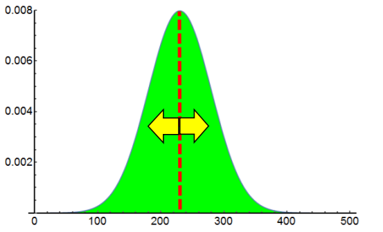
根据这些数据，我想知道购买这样的套餐在未来是否划算，由于未来每个月会产生多少流量是不确认的，所以对于这类高不确定性问题的预测，我希望可以有具体的指标可以衡量结果的好坏，可以让我准确、高效的对比出是选择流泪套餐包划算还是维持现状不变划算。于是我引入两个指标：「回报」和「风险」。
在这里可以作为「回报」指标的是「期望值」 ，所谓每个月流量资费的 「期望值」，就是我每个月所付出去的平均值，如果我们一直保存现状使用10元1G的流量，那么期望值就是230元。而实际上，每个月的实际费用可能远远不止230元；另一方面使用「标准差」可以衡量实际发生的费用距离期望值的大小，因此「标准差」就可以看作是「风险」指标。
维持原状不变的情况下，我们比较容易得到期望值(230)和标准差(50)，也就是可以量化的评估「回报」和「风险」。那么，假如使用新的套餐计划，会得到怎么样的「回报」和「风险」呢？
假设每个月使用的流量为U，单位是GB；对应的流量资费为P。
如果U<=20，则P=160；
如果U>20，则P=160+15*（U-20）；
用一个Excel公式表示为：P=160+IF(U>20,15*(U-20),0)。
因此，问题就可以总结为，P的概率分布是怎么样的？P的期望值是多少？P的标准差是多少？
上面说过，U的期望值是23，那么P的期望值会是：160+15*(23-3)=205吗？
显然，没有这么简单。举个反例，假如U只可能是18和28两种情况，那么每一种情况的概率为50%，U的期望值正好是23。
U=18时，P=160；
U=28时，P=160+15*(28-20)=280；
P的期望值为：0.5*160+0.5*280=220，显然不是205。
说了这么久，我们这一期的主角总算要出场了，真实会耍大牌啊！
这个问题的解决方法正是「模拟分析」，所谓的模拟，就是以输入因子的概率分布为起点，基于求出的输出结果与输入因子之间的代数关系，尽可能的模拟出输出结果的概率分布。模拟准确与否的关键一点是要「随机」的挑选用于模拟的输入因子，而且模拟所使用的样本越多，久越接近真实值。
Excel的模拟分析工具可以高效的帮我们解决上述问题。我们分别取10个和1000个样本进行演示。
第一步：先在Excel中，列出我们已知的数据。
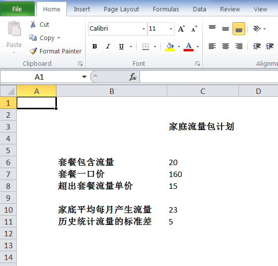
第二步：设置模拟次数、模拟样本和模拟结果。
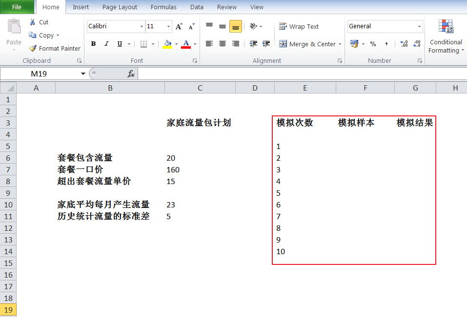
第三步：使用随机数生成功能生成模拟样本，使用正态分布，设置均值和标准差。
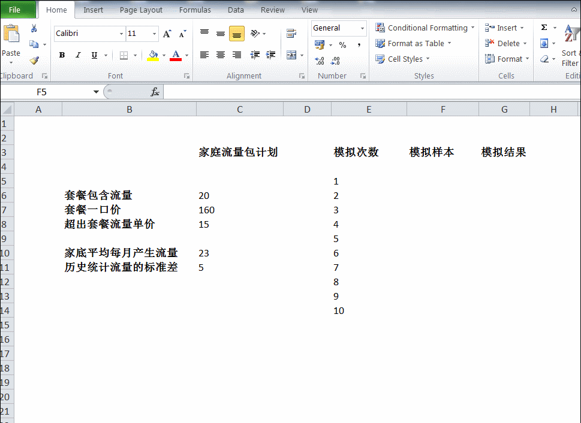
（模拟过程当中出现的额外的一个输入项Random seed实际上是可以随便填的，目的是在其他参数不变的情况下，使用相同的随机种子可以得到相同的随机数。）
第四步：根据生成的随机样本，和输出输入之间的关系(P=160+IF(U>20,15*(U-20),0) )，计算模拟输出。
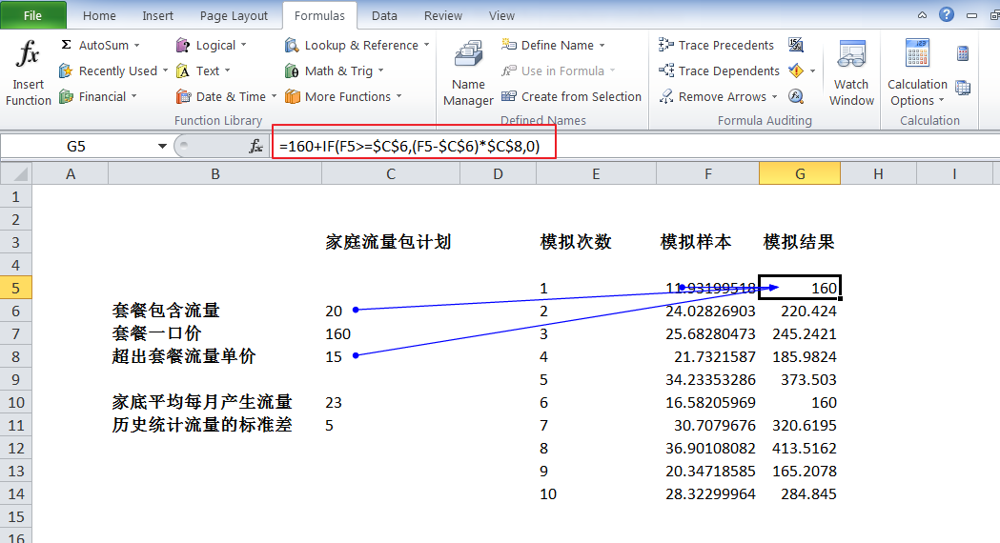
第五步：计算随机样本和模拟结果的均值及标准差。
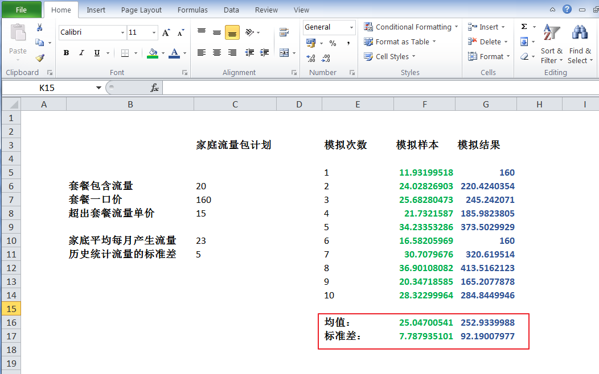
至此，就得到了在10个随机样本的情况下模拟出的最终输出结果，未来我每月需要支付的流量资费的期望值大约是253元，标准差是92元。因为只取了10个样本，而且可以明显的看出样本的均值(25)和标准差(7.79)和我们历史数据的统计结果之间存在着较大的差异，因此，既然用Excel这么方便，我打算生成1000个样本，以期模拟的效果可以更接近最终的真实值。下面是我使用1000个样本模拟的最终结果：
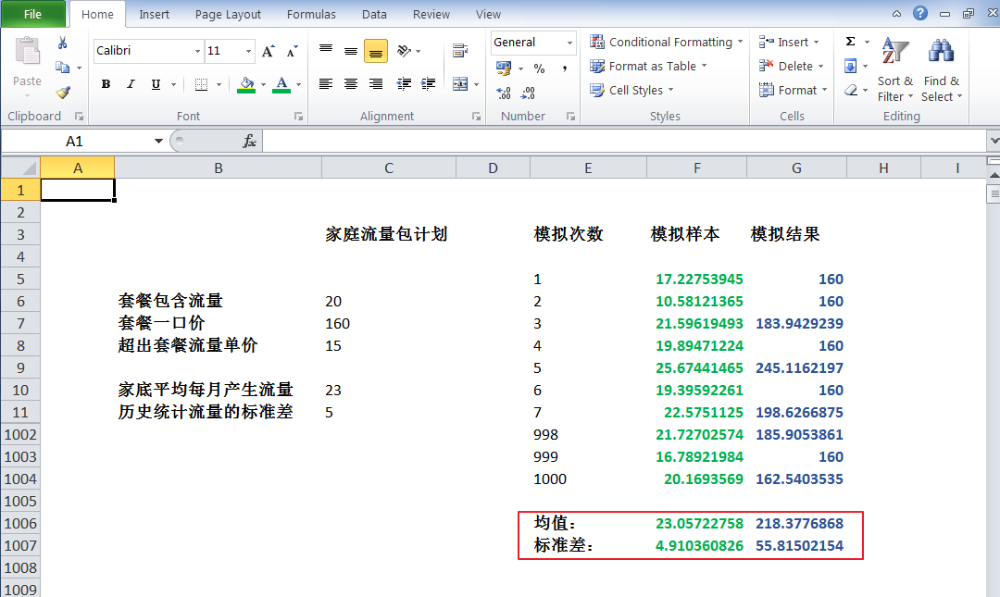
可见，当有1000个样本的时候，输入因子样本集合求得的期望值和标准差更接近实际值。
模拟分析的结果，可以用直方图直观的展示，在这个例子中，输入因子满足正态分布，而输出结果，也就是每个月的流量资费，显然不是正态分布的。有了模拟出来的这些数据，今后做决策就有了更可靠的数据支撑。
样本分布直方图：
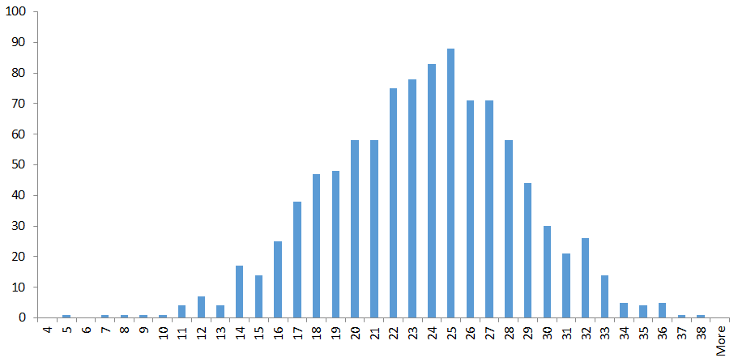
模拟结果直方图：
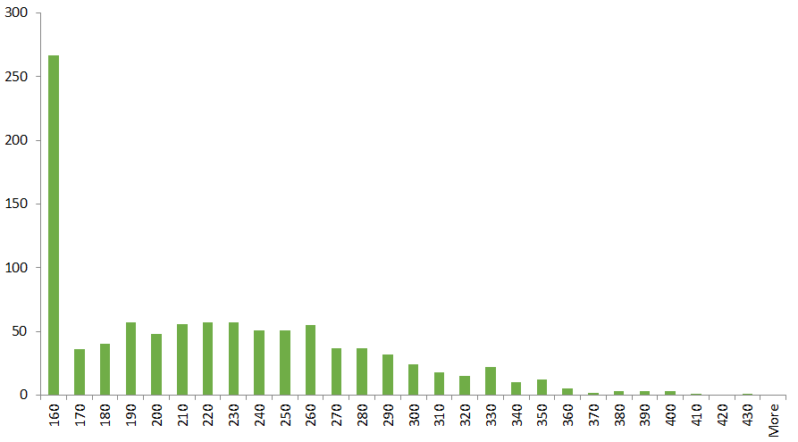
不知道大家看了这个例子对「模拟分析」是不是有了一点感觉，如果有些朋友觉得这个例子太过生活，和商务分析关系不大，那么，请接着看下面这个例子。
案例二：化工企业ESI的生产计划
根据ESI和其客户甲签的合同，要求ESI每天提供35吨某化学品A，同时客户支付其10000元每顿的货款。
但是，ESI生产化学品A的生产线并不稳定，平均每天可以产出35吨，实际上可能某几天会多一些，某几天会少一些。
我们把每天化学品的产量用P表示，那么根据对历史数据的统计，P是满足均值为35吨，标准差为7顿的正态分布。
ESI每生产销售一吨化学品A的成本是9500，假如当天产量超过35吨，那么多出来的部分，只能以九折的价格9000元卖掉。如果当天产量不足35吨，那么还是以10000元每吨的价格把所有产出都卖给客户甲，并且由于供货量不达标，每缺少1吨需要赔偿2000元，比如产量是32.5吨，那么需要支付赔偿金为：(35-32.5)*2000=5000元。
我们要解决的问题是根据以上信息，模拟出ESI每天利润的期望值和标准差，作为衡量每天生产和销售不确定性的「回报」和「风险」。
假设当天产量为31吨，ESI当天利润为多少？
因为当天产量为31吨小于35吨，因此ESI将产出的所有化学品A都卖给客户甲，并且少于35的部分还需要按每吨2000元支付赔款。
当天收入为： 31 * 10000 = 310000
当天成本为： 31 * 9500 = 294500
赔款为： （35-31） * 2000 = 8000
当天利润为：310000 - 294500 - 8000 = 7500 。
假设当天产量为37吨，ESI当天利润是多少？
因为当天产量37吨大于35吨，因此，除了将35吨卖给客户甲之外，多余的2吨以折扣价格9000元卖出。
当天收入为： 35 * 10000 + 2 * 9000 = 368000
当天成本为： 37 * 9500 = 351500
当天利润为： 368000 - 351500 = 16500 。
假设当天产量为P吨，ESI当天利润V和P的关系用代数公式表示是怎么样的？
如果P小于35，则当天利润为：
10000 * P - 9500 * P - 2000 * ( 35 - P )
= 500 * P - 2000 * ( 35 - P )
= 500 * P - 70000 + 2000 * P
= 2500 * P - 70000
如果P大于等于35，则当天利润为：
10000 * 35 + 9000 * (P - 35 ) - 9500 * P
= -500 * P + 35000 。
合并上述两种情况后，可得如下计算当天利润的公式：
V = IF ( P < 35 , 2500 * P - 70000, -500 * P + 35000 )
使用Excel的模拟分析功能，对100个样本进行模拟，分析模拟结果的概率分布，期望值和标准差。
第一步：先在Excel中，列出我们已知的数据。
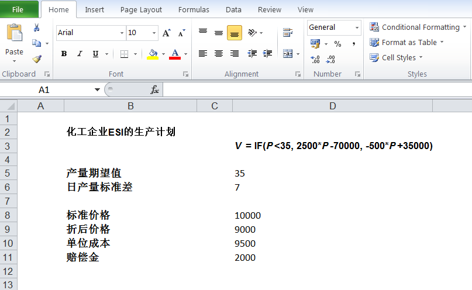
第二步：设置模拟次数、模拟样本和模拟结果。
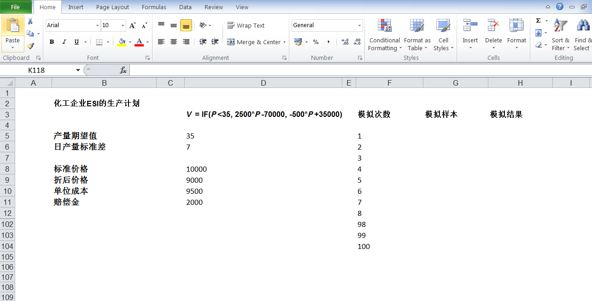
第三步：使用随机数生成功能生成模拟样本，使用正态分布，设置均值和标准差。
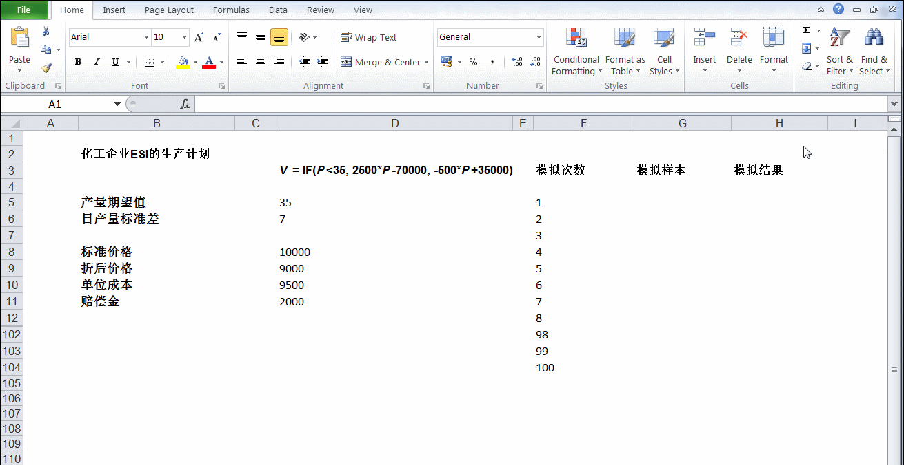
第四步：根据生成的随机样本，和输出输入之间的关系( V = IF ( P < 35 , 2500 P - 70000, -500 P + 35000 ) )，计算模拟输出。
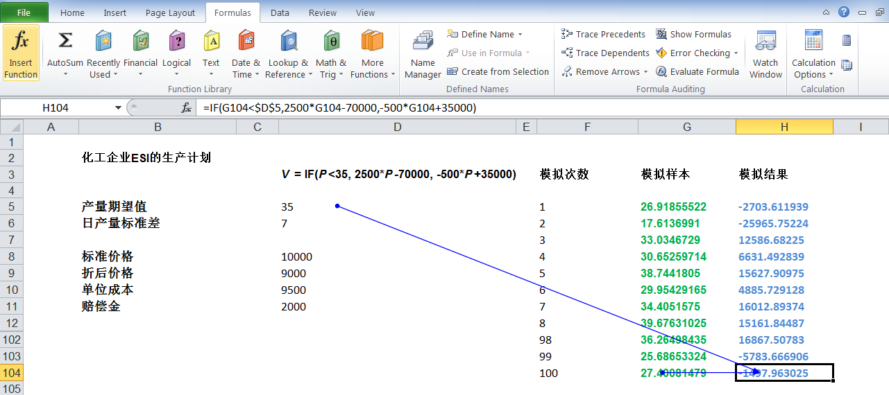
第五步：计算随机样本和模拟结果的均值及标准差。
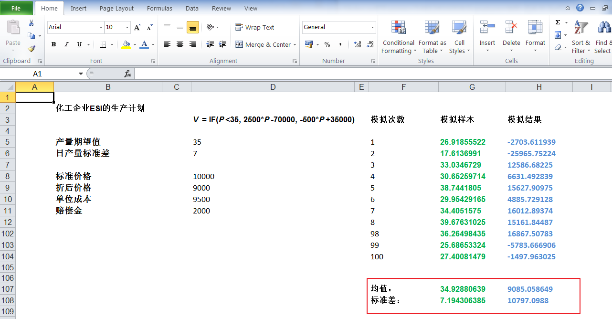
最终我们得到ESI公司每天利润的期望值是9085，标准差是10797。同样可以用直方图展示模拟样本和模拟结果的概率分布。
模拟样本分布直方图：
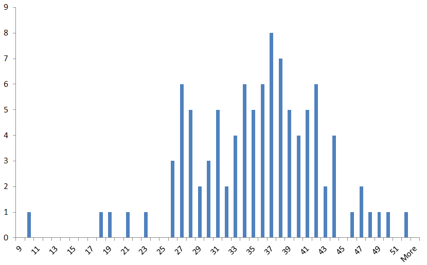
模拟结果分布直方图：
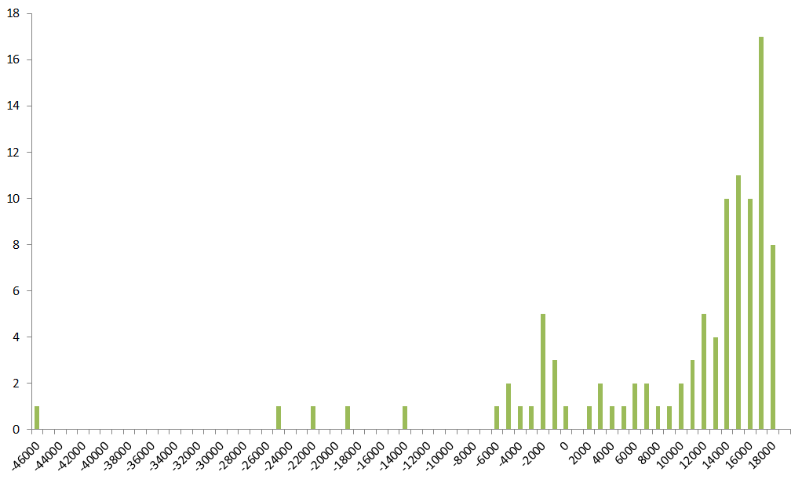
通过上面两个「模拟分析」的例子，我们可以看到，即便是在高不确定业务场景下，也可以有办法明确目标的输出结果，并且最重要的是可以得到两个关键的衡量指标「回报」 和「风险」，这为将来做出正确的决策提供了很强的数据支撑。
下一弹将要和大家介绍的是如何综合运用「模拟分析」与「规划求解」来指导和优化决策，敬请期待！